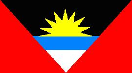
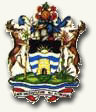

Antigua y Barbuda
|
 |
 |
Información General
Nombre oficial: Antigua y Barbuda.
Área:
440 km².
Costas: 153
Km
División
política: Seis parroquias
- Saint George
- Saint John's
- Saint Mary
- Saint Paul
- Saint Peter
- Saint Philip
- y las islas de Barbuda y Redonda.
Unidad monetaria: Dólar
Caribe-Este (EC$).
1 Dólar Caribe-Este = 100 centavos.
Idiomas:
Inglés (oficial).
Fiesta nacional:
1 de noviembre, Día de la Independencia.
Gentilicio:
de Antigua y Barbuda.
Hora oficial:
GMT -4 horas (normal/verano).
Miembro de:
ONU, Commonwealth, OEA, CARICOM.
Perfil
Ecónomico
Perfil Demográfico
Población:
74.000 hab.
Densidad de población: 152 hab/km²
Perfil Cultural
Alfabetismo: 82%
- Adultos (15+): 90.2
- Jovenes (15-24):96.6
Fuente: http://portal.unesco.org/geography/en/ev.php-URL_ID=2485&URL_DO=DO_TOPIC&URL_SECTION=201.html
Religión:
- Anglicanos: 43,7%
- Protestantes: 39,4%
- Católicos: 12,0%
- Espiritistas: 2,3%
- Bahaístas: 1,2%
- Otros: 1,4%
Sistema de Gobierno
Constitución vigente:
Noviembre, 1981.
Sistema ejecutivo: Monarca británico (jefe de Estado,
representado por el gobernador general), primer ministro (jefe de
Gobierno, debe contar con la mayoría en la Cámara
de
Representantes), gabinete.
Sistema legislativo: Senado (diecisiete miembros designados) y
Cámara de Representantes (diecisiete miembros electos por
sufragio).
Aproximación histórica
Antigua carece de bosques y su
territorio es
bajo y ondulado, de origen volcánico. Barbuda es llana y
boscosa
y de origen coralino. Hay abundantes playas y un clima tropical
agradable que ha propiciado el aumento del turismo. Redonda es un
peñasco que posee yacimientos de fosfatos.
Estas islas fueron descubiertas por Colón en 1493 y
colonizadas por los ingleses a principios del siglo XVII.
En 1951, bajo la tutela británica, Antigua y Barbuda tienen
las
primeras elecciones libres. Dos partidos, el Movimiento de Trabajadores
Progresistas (MTP) y el Partido de Trabajadores de Antigua (PTA), con
pocas diferencias entre sí, se alternan en el poder. En 1975
Antigua y Barbuda acuerdan buscar la independencia por separado. La
unión de Antigua y Barbuda como Estado soberano asociado a
la
Comunidad Británica (CommonWealth) ocurre finalmente en 1981.
«-- ir al comienzo
«-- regresar